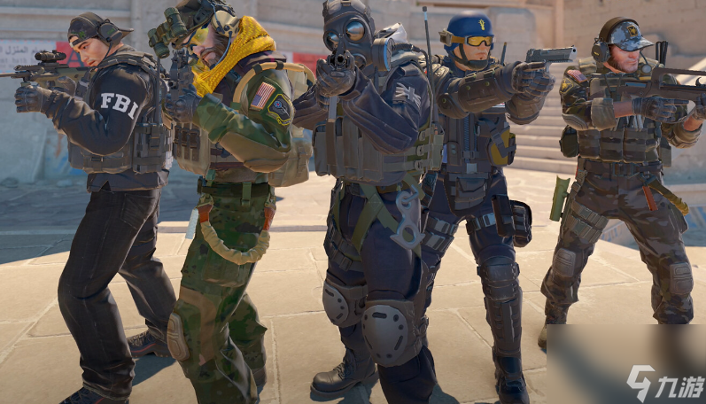
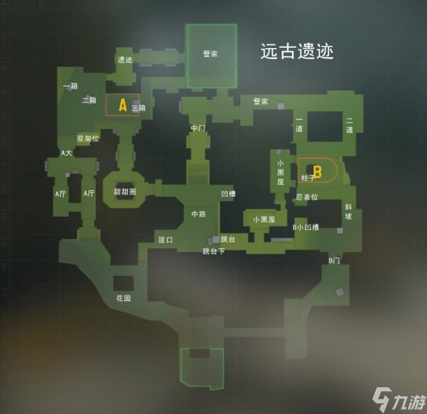

主页 | 游戏特色 | 如何游玩

反恐精英2（CS2）是Valve公司开发的一款经典第一人称射击游戏，继承了CS系列的核心玩法并进行了全面升级。
CS2是一款多人在线战术射击游戏，玩家分为反恐精英和恐怖分子两队，在限定时间内完成炸弹安放/拆除或消灭所有敌人等目标。

游戏以其高度的竞技性、策略性和团队合作要求而闻名，是全球最受欢迎的电子竞技项目之一。
作者：zack | 学校：法拉古特 | 发布日期：2026 1 29